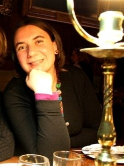

Chiara Batini |
|

Chiara Batini is an Honorary Vistor Fellow at the Department of Genetics, University of Leicester, UK. Chiara finished her PhD in 2008, carried out between Sapienza University of Rome and Universitat Pompeu Fabra (Barcelona, Spain), and followed by a long-term post-doc at University of Leicester. Her main research interests are in human evolutionary genetics and the role of culture and environment in shaping genetic diversity, with a special focus on mitochondrial and Y chromosome variation in Central African and European populations. She started working with NGS data in 2010, and since 2013 she is co-organiser and trainer for the workshops run by BBASH at University of Leicester.
|